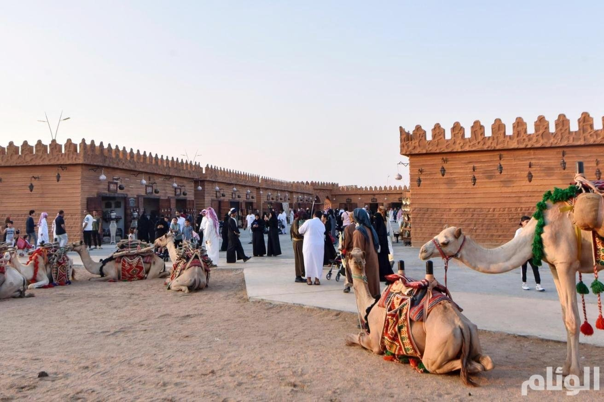
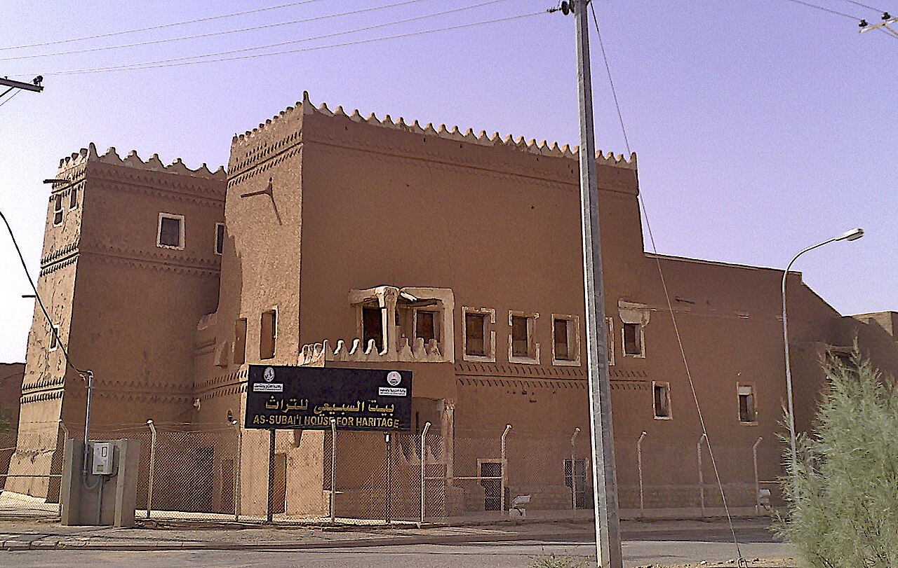
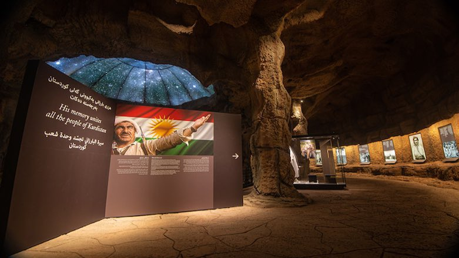

مدائن صالح
هي موقع أثري يقع في منطقة الحجاز في المملكة العربية السعودية. يعتبر مدائن صالح من أهم حواضر بعد عاصمتهم البتراء، إذ تحتوي على أكبر مستوطنة جنوبية لمملكة

مدينة فيد التاريخية
هي مدينة تاريخية تقع إلى الجنوب الشرقي من منطقة حائل في المملكة العربية السعودية,إذ تختزن جبالها نقوشاً تاريخية تعود إلى عصور ما قبل التاريخ

الدرعية التاريخية
هي مدينة تاريخية تقع في منطقة الرياض في المملكة العربية السعودية,أسست المدينة على يد مانع بن ربيعة المريدي،وتعدّ أحد الأماكن الأثرية التاريخية للمنطقة

جدة التاريخية
تعرف محلياً باسم جدة البلد، تقع في وسط مدينة جدة، ويعود تاريخها -حسب بعض المصادر- إلى عصور ما قبل الإسلام، وأن نقطة التحول في تاريخها كانت في عهد الخليفة الراشد عثمان بن عفان عندما اتخذها ميناءً لمكة المكرمة

متحف المصمك
هو عبارة عن حصن مشيّد من اللبن، يقع في منتصف الرياض عاصمة السعودية وتحديداً في حيّ الديرة، وقد بني القصر على يد الأمير عبد الرحمن بن ضبعان عام 1895م

مركز الملك عبدالعزيزالتاريخي
أنشئ مركز الملك عبد العزيز التاريخي ليكون معلما وطنيا على مستوى المملكة,وليكون مركزا ثقافيا وواجهة حضارية مشرقة تعكس تاريخ جزيرة العرب، ورسالة الإسلام الخالدة، وتعرف بتاريخ المملكة،

قرية رجال ألمع
تضم القرية عدة مباني والتي بدورها تتكون من عدة طوابق وبعضها يصل إلى ثمانية طوابق وهي مبنية بالحجارة ولها نوافذ خشبية ملونة.هي قرية تراثية تقع في محافظة رجال ألمع الواقعة بمنطقة عسير

سوق عكاظ
هو أحد أشهر الأسواق التاريخية العريقة في المملكة العربية السعودية. يقع في مدينة الطائف ويعود تاريخه إلى الجاهلية. يشتهر السوق بالأدب والفن والتجارة،

مواقع التراث العمراني
هي مواقع تاريخية وثقافية تمثل العمارة والتصميم الذي يعكس الثقافة والتاريخ للمجتمعات المختلفة. في المملكة العربية السعودية، هناك العديد من المواقع التي تم تسجيلها في سجل التراث العمراني

قصر إمارة نجران
مبنى تاريخي يقع في وسط المدينة القديمة بنجران,مصمم على شكل قلعة ذات أسوار عالية أقيمت في أركانه الأربعة أبراج دائرية للمراقبة. ويوجد به مسجد وبئر قديمة يعود تاريخها إلى ما قبل الإسلام.

قصر العسكر
قصر تاريخي وأحد أهم المواقع الأثرية والسياحية في محافظة المجمعة ، بـ منطقة الرياض وسط المملكة العربية السعودية. يبلغ عمر القصر نحو 200 عام، وهو مبني على الطراز النجدي القديم.

وسط شقراء
هي العاصمة الإدارية لمحافظة شقراء التابعة لمنطقة الرياض في المملكة العربية السعودية، وتقع على بعد حوالي 185 كم شمال غرب العاصمة الرياض.

قرية ذي عين التراثية
هي قرية أثرية تقع في تهامة غرب المملكة العربية السعودية,بنيت القرية على قمة جبل أبيض وتشتهر بزراعة الموز والليمون والفلفل والريحان والكادي، والصناعات اليدوية

مقصورة القنون
هو مبنى تاريخي في قرية عقدة حائل الواقعة في منطقة حائل في المملكة العربية السعودية,يتميز معمار مقصورة القنون بالنقوش الداخلية القديمة و الألوان و باستخدام معمار البيئة المحلية لمنطقة نجد

عين زبيدة
عين زبيدة قناة مائية قامت بإنشائها زبيدة زوجة هارون الرشيد لسقيا سكان مكة والحجاج في المشاعر المقدسة بعد ما رأت ما يلحق بالحجاج من مشقة في الحصول على المياه

حي حراء الثقافي
يضم مجموعة من المتاحف والمعارض التي تثري تجربة الزوار الدينية والثقافية، منها معرض الوحي ومتحف القرآن الكريم، وليصبح اليوم معلما ثقافيا سياحيا تشرف عليه الهيئة الملكية لمدينة مكة المكرمة والمشاعر المقدسة.

مسجد عمر بن الخطاب
يقع المسجد في الجهة الجنوبية الغربية من المسجد النبوي